Ratio Spreads 2 — The Short Bear Ratio Spread
The bearish mirror of the short bull ratio spread: buy MORE cheap lower-strike puts, write FEWER expensive higher-strike puts, sized for zero cost.
This is a near-free way to bet a stock gets murdered. You buy a large ratio of cheap out-of-the-money puts and pay for them by writing a few expensive in-the-money puts — so a sharp fall pays huge, a small move costs a little, and a dramatic rally costs you nothing.
The gist
- Structure: buy a Long Put and write a Put with a HIGHER strike, same expiration — a ratio trade where you buy MORE puts than you write (the opposite of the short bull ratio spread).
- Payoff: profits from a sharp fall, limited only by the stock going to zero (still huge $ upside); maximum loss is limited and occurs at the long/bought strike at expiry.
- Key asymmetry: unusually for a bearish strategy you are BETTER OFF if the stock rallies dramatically above the written strike (both legs expire worthless, you lose only the ~zero cost) than if it rises only a little — so you want to be big-right or big-wrong, never sideways.
- Formulas: Profit = ((Strike A − Price) × Qty A) − ((Strike B − Price) × Qty B); Max loss = (Strike B − Price) × Qty B, made when Price = Strike A. Leg A = bought lower puts, Leg B = written higher puts.
- When to use: long-dated fundamental-turnaround stories (6–12 months out) and terminal / going-to-zero shorts — 'stocks take the escalator up and the elevator down' — or as a near-free hedge on a long-stock / IRA position.
- PPL worked example (26 Feb 2018, spot $30.52, Hist Vol 18.79%, debt/equity 1.8, expiry 18 Jan 2019): the 4:1 zero-cost spread = WRITE 3× $35 puts @ $6 (credit $1,800) + BUY 12× $28 puts @ $1.50 (debit $1,800) = net $0.
- PPL outcomes at expiry: at $35 lose $0; at ~$30.52 short liability $1,344; at $28 worst-case −$2,100; at $23 +$2,400; at $20 +$5,100.
- Dividend skew: the ATM $30 puts are priced much richer than the ATM $30 calls because the market prices in four expected dividends (PPL is a high-dividend utility, ~5–5.5% yield) — which is exactly why the plain long put and bear put spread showed poor risk/reward.
- Usefulness ranked MEDIUM (lower than the bull sibling's High) for two reasons only: max gain is capped at stock→0, and getting the ratio and strikes right can be complex.
Agenda — the short bear ratio spread
- Quick Explanation
- When to Use the Strategy
- How to Use the Strategy
- Break Even, Profit Calculations (Maximum Upside), Risk Calculations (Maximum Downside)
- Strategy Example
Video 17 is the second in the ratio-spread series and works through the usual template. The short bear ratio spread is the directional bearish mirror of the short bull ratio spread covered in chapter 16.
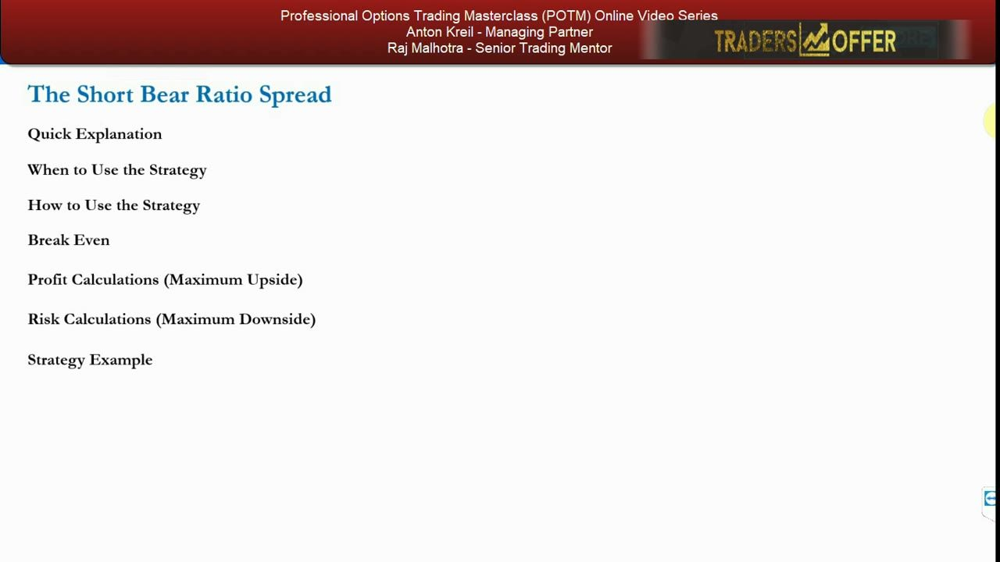
Quick explanation — buy more, write fewer
- Buy a Long Put and Write a Put with a HIGHER strike, same expiration date.
- Established to generate profits from the price of a security falling in value — essentially an extension of just buying puts (the Long Put).
- A ratio trade: one leg is at a higher ratio to the other, and in this case it involves buying MORE puts than you write.
- A good choice when you expect the price to drop SHARPLY but want to reduce the upfront cost of establishing a position.
- The trade-off: you make returns at a proportionately lower rate as the price falls, but you pay much less.
It gives you long-put-style downside exposure while cutting the premium bill dramatically, because writing the higher-strike puts pays for the puts you buy. Use it when you expect a big fall but have some concern the stock could instead go up — and want protection against that.
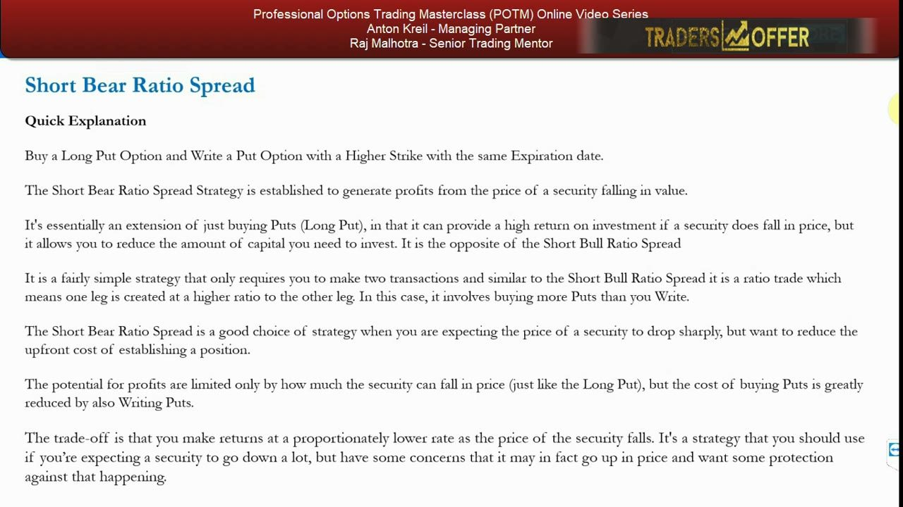
Usefulness — ranked MEDIUM, and Anton admits that's a little mean
- Benchmarked against being simply short the stock — it must have a marginal benefit in both capital requirement and risk/reward — and against being long puts or on a bear put spread.
- Ranked MEDIUM (not high) for only 2 factors: (1) maximum gain is limited (only to the stock going to zero), and (2) it can be complex to get the ratio and strikes right.
- Versus the short bull ratio spread's unlimited $ upside, this has limited $ upside — so theoretically 'not as useful'.
- 'We are probably being a little bit mean' — get the ratios and strikes right and it has high usefulness.
- If you get it right the risk/reward can still be good: small debit, zero cost, or even a credit, and the 'limited' $ upside (to zero) can still be huge.
The MEDIUM rank is a technicality about capped upside and setup complexity — not a comment on real-world value. In the right fundamental scenario the risk/reward is excellent.
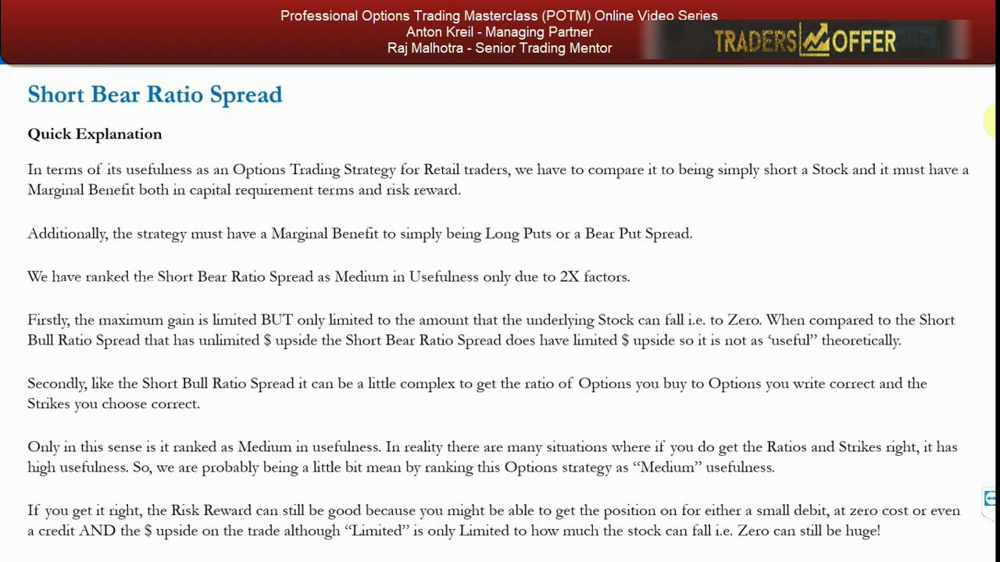
Profit, loss and the rally asymmetry
- Returns a profit if at expiration the underlying falls enough that the puts you own are worth more than the ones you have written (remember the written ones have a higher strike and higher price because they're in the money).
- Example (3-to-1 ratio): if your puts are worth $1 each and the written ones $2.50 each, the lower the price, the more profit — every cent down, your long puts gain a larger portion than the written puts.
- Maximum loss occurs when the underlying = the strike of the puts you BOUGHT at expiry: your puts expire worthless while you carry a liability on the higher-strike written puts.
- Unusually for a bearish strategy: you're BETTER OFF if the price rises dramatically than if it only rises a little.
- If the price rises above the strike of the puts you wrote, those expire worthless too and you lose only any upfront cost — which is why you make that cost as close to zero as possible.
The worst place to be is a small move — pinned at your long strike. A violent rally, counterintuitively, is a good outcome because both legs expire worthless and a zero-cost spread costs you nothing to have been wrong.
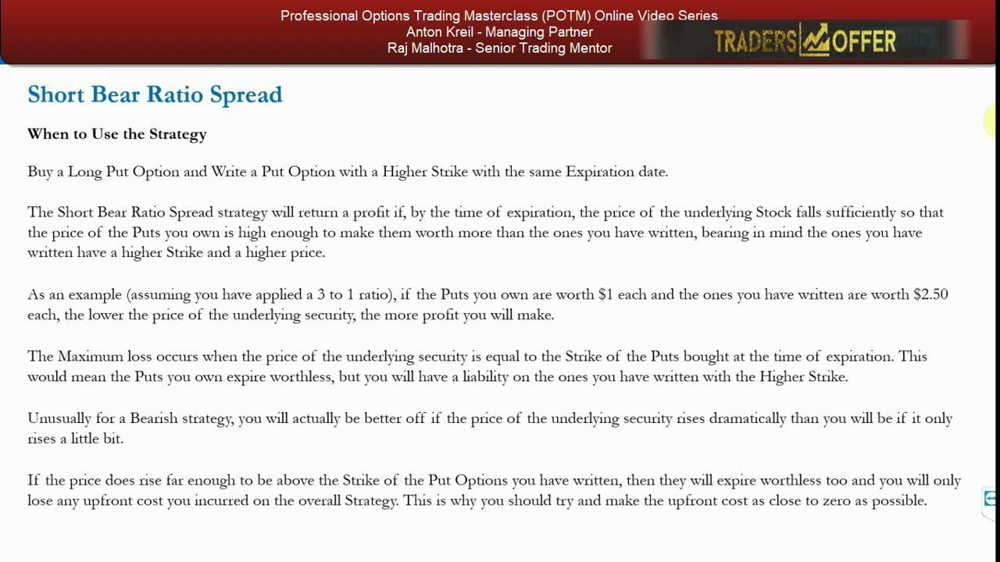
When to use it — the fundamental-turnaround story
- Best when you are fundamentally bearish long term BUT it may take time to break the uptrend / a technical level and fall a long way — AND the stock has a fair chance of going higher.
- If you didn't think it could go higher, you'd just short the stock, buy a put, or put on a bear put spread.
- Classic setup: a stock up 200% in 2 years on genuinely good fundamentals, but you now assess a bearish turnaround is coming — you just can't time it exactly.
- In turnaround stories, shorting stock is dangerous (unlimited $ downside) and buying puts / a bear put spread can be wasted premium if the turn takes longer than expected.
- With a long-dated expiry it's improbable the stock is still roughly the same price when it expires — you want a big move either way.
The market can stay irrational longer than you can stay solvent. A long-dated short bear ratio spread lets you sit through a fundamental fight between bulls and bears without bleeding premium — you win big if the turn happens and lose ~nothing if the uptrend simply grinds on.
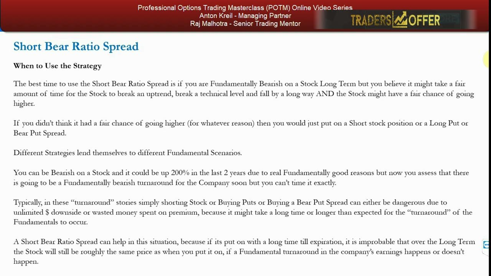
Writing ITM puts, high vol and the escalator/elevator
- You are writing IN-THE-MONEY puts, so a longer-dated expiry means more expensive options and more money taken upfront — you earn that side through time decay.
- Stocks go up in a trending manner but fall much faster on a fundamental turnaround: 'stocks take the escalator up and the elevator down'.
- On a worsening turn, volatility spikes, every shareholder runs for the exit, stock borrow gets expensive (higher short-squeeze risk) and options across the chain get pricey.
- That makes shorting stock and buying long puts / put spreads more expensive and often non-viable.
- The short bear ratio spread thrives here: you write ITM puts at high vol AND buy more OTM puts at high vol, at small / zero cost or a credit — this is its incremental usefulness.
When fear spikes, the whole options chain gets expensive — but the ratio structure sells the richest (ITM) puts to fund a large stack of cheaper OTM ones, so high volatility works for you rather than against you.
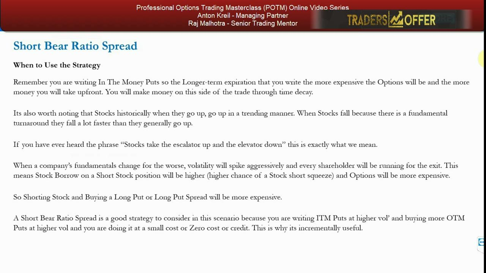
Using it as a near-free hedge on long stock
- If you're long a stock you think may dip short-term but whose fundamentals won't change — you want to stay long and keep collecting dividends.
- Create a short bear ratio spread at little or zero cost to get a 'close to free' or total 'Free Hedge'.
- If the stock falls you lose on the stock's capital value but make it back on the ratio spread; unwind the spread when you think it has bottomed.
- You end up long the stock at lower prices having lost no money on the fall — a big edge over paying for a protective put or put spread.
- Caveat: you make proportionately less than a straight long put / put spread hedge, and you STILL have to get the strikes and ratios right — otherwise it has no incremental value.
For an IRA or pension holding you don't want to sell, this can be a hedge you pay nothing for — the classic 'best of both worlds' trade-off, at the cost of a lower dollar payoff and the difficulty of getting the ratio right.
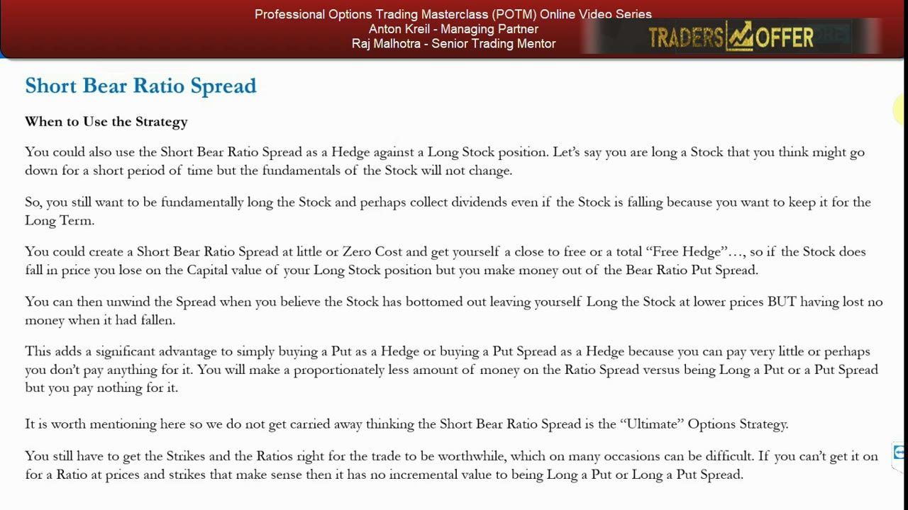
How to use it — best of both worlds, one hurdle
- Biggest advantage: technically the best of both worlds — good profit/reward if the stock falls a fair amount, little or nothing lost if it rises a fair amount.
- The only real risk: the security barely moves at all — your bought puts lose their premium while you still carry the written-put liability.
- In that case, unwind the positions early and claw back as much as you can once it's obvious the stock won't move much before expiry.
- Being able to implement it with little to no upfront cost is a major part of the appeal.
The strategy rewards conviction and punishes indecision. As long as the stock makes a real move in either direction, the risk/reward is strong; a sideways drift is the one outcome that quietly costs you.
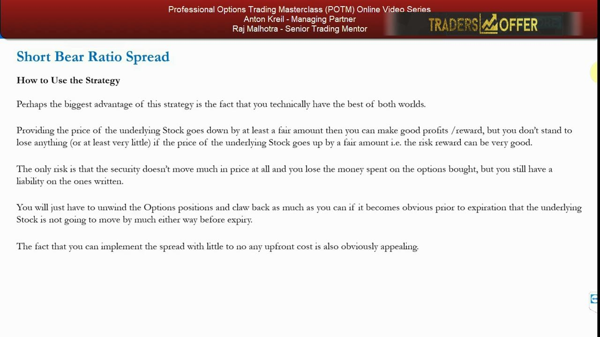
The setup hurdle and the 6–12 month calendar
- Major hurdle: get the ratio-of-strikes calculation right — simple once you know how, but hard when starting out.
- Minor drawback: you won't make profits at quite the same rate as just buying puts — the trade-off for slashing upfront cost.
- Best deployed on long-dated shots: fundamental-turnaround stories, or stocks hit by a big negative shock and falling rapidly ('going to zero' trades).
- Getting in for a very low price or for free while giving it enough time to work is the best way to play it — more useful than shorting stock, a long put (upfront cost + time decay) or a bear put spread (upfront cost, and higher).
- Look 6–12 months out to give the bearish turnaround a few more quarters to take hold and for investors to wake up and head for the exits.
Duration is doing the work here. The long expiry buys time for the fundamental thesis to play out and stacks the odds against the stock finishing exactly where it started — the one place the trade underperforms.
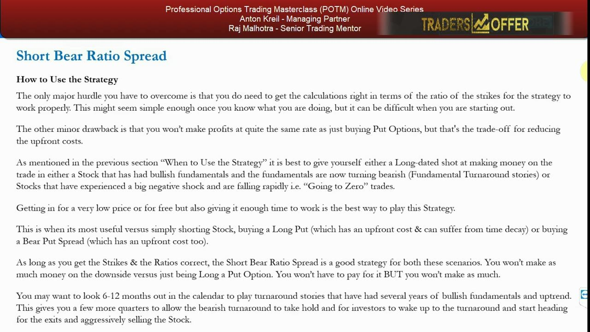
The terminal / going-to-zero case and short squeezes
- In stocks being hammered to zero, short squeezes almost always occur and can be very violent when stock is hard to borrow.
- That's exactly when the short bear ratio spread deploys most efficiently.
- You can sell ITM puts for exorbitant prices and buy much further OTM puts than usual.
- You can even use HIGHER ratios because annualized volatility could be over 100%.
The crisis conditions that make shorting stock dangerous — expensive borrow, squeeze risk, sky-high vol — are precisely what let you buy a big stack of far-OTM puts almost for free by writing the ultra-rich ITM ones.
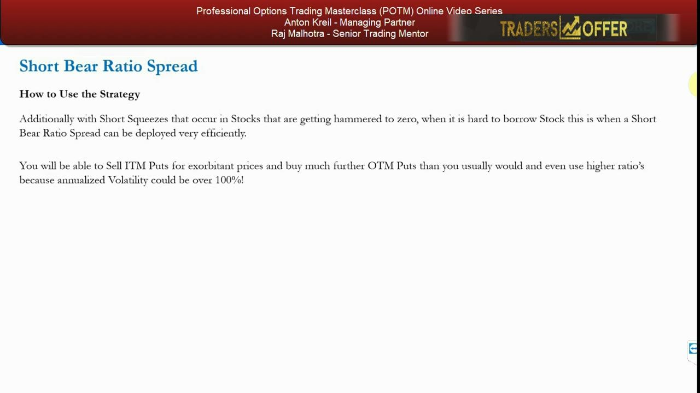
PPL Corp option chain — the worked example
- PPL Corp, a US utility. Decision date 26 February 2018, higher-interest-rate environment looks likely and is topical.
- Thesis: rising rates could seriously hurt highly indebted utilities like PPL, which has a debt/equity ratio of 1.8 — high versus peers, so very rate-sensitive.
- Stock at $30.52 (Last), Bid 30.33 / Ask 30.54, Hist Volatility 18.79%; expiry chosen is the 18 January 2019 contract.
- A short bear ratio spread in this contract could beat shorting stock, being long a put, or paying for a bear put spread — and could hedge a stock you already hold in an IRA or pension.
PPL is a fundamental-turnaround candidate: a long, predictable uptrend from ~$23–24 in 2010–11 to ~$40 in 2017 that has just broken, with a rates-driven bearish catalyst. Long-dated to Jan 2019 gives the thesis time to play out.
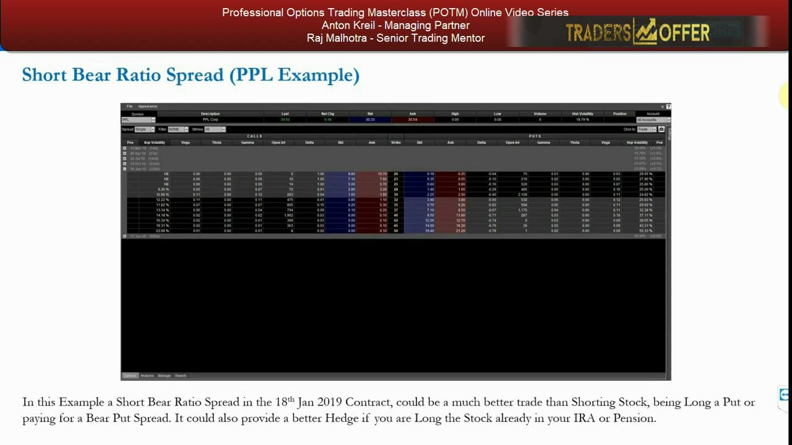
The four comparison trades on PPL
- SHORT STOCK ($30,000 = 983 shares): at $35 lose $4.48 × 983 = $4,403 then unlimited; at $23 make $7.52 × 983 = $7,392 — but risk is far larger than the gain.
- LONG $28 PUT: 11 contracts @ $1.50 = $1,650; break-even $26.50; at $23 make $3.50 × 11 × 100 = $3,850; risk/reward 2.33; delta −29 (~30% chance of finishing ITM) — below the 1-to-3 minimum.
- $30/$25 BEAR PUT SPREAD: buy $30 @ $2.40, sell $25 @ $0.70, net debit $1.70; break-even $28.30; risk $2,040; at $23 make $3.30 × 12 × 100 = $3,960; risk/reward 1.94.
- 4:1 SHORT BEAR RATIO SPREAD (zero cost): WRITE 3× $35 puts @ $6 = $1,800 credit + BUY 12× $28 puts @ $1.50 = $1,800 debit = net $0.
- Formulas — Profit = ((Strike A − Price) × Qty A) − ((Strike B − Price) × Qty B); Max loss = (Strike B − Price) × Qty B, made when Price = Strike A (Leg A = bought lower puts, Leg B = written higher puts).
The plain long put (2.33) and bear put spread (1.94) both miss the 1-to-3 risk/reward bar — dragged down because dividend expectations make the puts expensive. The zero-cost ratio spread sidesteps the premium problem entirely.
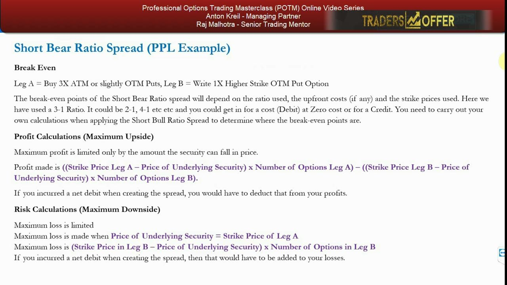
PPL ratio-spread outcomes at expiry
- At $35 (or higher): both legs expire worthless — you lose $0 because the spread cost nothing.
- Stock unchanged (~$30.52): long puts worthless, written puts carry a $1,344 liability (offset by time value earned).
- At $28 (the bought strike — WORST case): long puts worthless, written puts worth ~$7 → liability of $2,100.
- At $23: long puts ~$5 each = $6,000, written puts liability $3,600 → net profit $2,400 (risked $2,100 to make $2,400).
- At $20: long puts 12 × $8 × 100 = $9,600, written puts liability 3 × $15 × 100 = $4,500 → net profit $5,100.
The marginal benefit shows up only on a BIG move down or up. The $ upside is 'limited' only in the sense the stock can go to zero — so it's still huge — while a rally through $35 costs nothing. Be big-right or big-wrong; avoid the pin at $28.
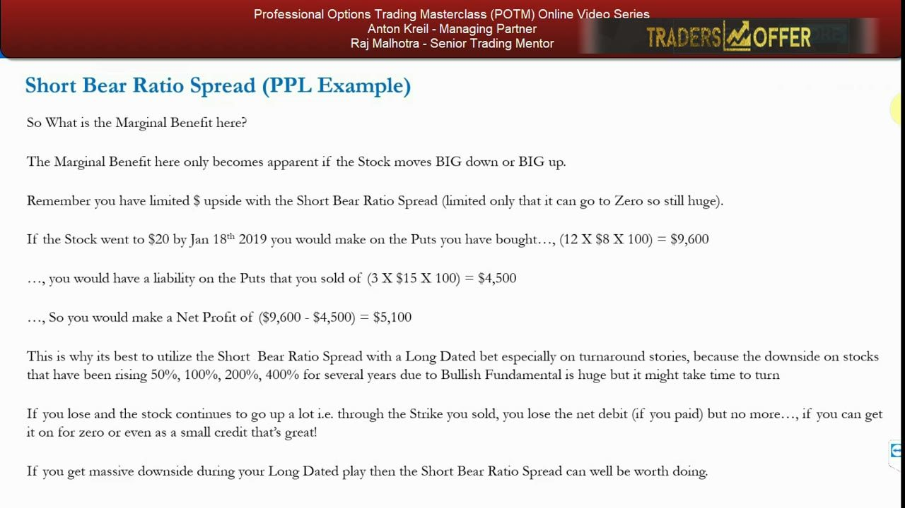
Why the puts were expensive — the dividend put/call skew
- The ATM $30 puts are priced much HIGHER than the ATM $30 calls, even though the calls are ITM and the puts are OTM (stock at $30.52).
- The cause: four dividend payments the market expects over the next four quarters, since utilities are high-dividend stocks (PPL ~5–5.5% yield).
- On the ex-dividend date the stock drops by the dividend amount, but the option price barely moves because the dividend is already priced in.
- This is precisely why the plain long put and bear put spread showed poor risk/reward — the market prices future dividends into the puts.
High-dividend names carry a structural put richness. That skew penalised the simple bearish trades and is exactly the condition where writing those expensive puts (as the ratio spread does) turns a headwind into an advantage.
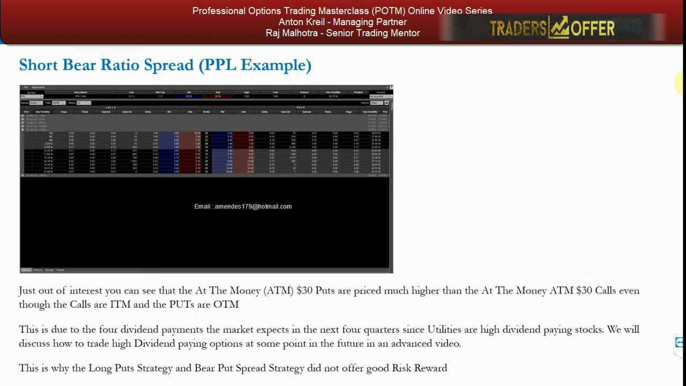
The generic Company X 3:1 illustration
- Setup (IMPLIED strikes, not verbatim): Leg A = buy 3× ~$50 puts (ATM/slightly OTM); Leg B = write 1× ~$55 higher-strike put; 3:1 ratio; put on for ~zero cost.
- At $47: Leg A puts ~$3 each = $900, Leg B put ~$8 = $800 → profit ~$100.
- At $45: Leg A ~$5 each = $1,500, Leg B ~$10 = $1,000 → profit ~$500.
- At $50 (worst — the Leg A strike): Leg A worthless, Leg B ~$5 liability = $500 → loss ~$500.
- At $55 (or higher): both legs worthless, zero initial cost → roughly break even; below ~$45 profits keep increasing. Break-evens are roughly $45 (down) and ~$55 (up).
The formalized template repeats the PPL shape at round numbers: a limited ~$500 max loss at the bought strike, rising profit as the stock falls, and a costless break-even on any rally above the written strike.
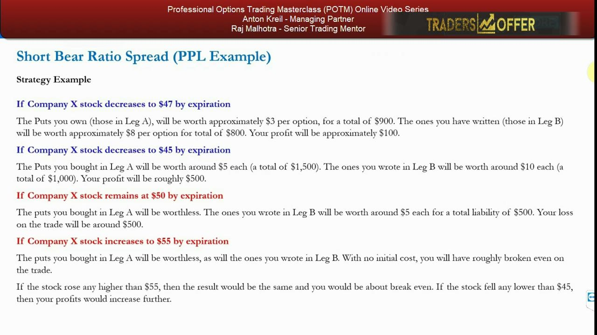
Glossary
- Short Bear Ratio SpreadBuy MORE lower-strike (cheaper, OTM) puts and write FEWER higher-strike (more expensive, ITM) puts of the same expiry, in a chosen ratio (e.g. 4:1 or 3:1), sized for ~zero net cost. Profits from a sharp fall; loss is limited and worst at the bought strike; a big rally costs only the upfront cost.
- Leg AThe bought leg — the LOWER-strike puts you own (more of them). Its strike is where the maximum loss occurs at expiry.
- Leg BThe written leg — the HIGHER-strike, in-the-money puts you sell (fewer of them). It generates the credit that pays for Leg A and is the source of your liability if the stock finishes below its strike.
- Ratio tradeA spread where the two legs are in unequal quantity. Here you buy more puts than you write (e.g. 4 bought to 1 written) to restore reward given the written puts are ITM.
- Profit formulaProfit = ((Strike A − Price) × Qty A) − ((Strike B − Price) × Qty B); deduct any net debit paid.
- Maximum lossLimited, and made when Price of the underlying = Strike A (the bought strike). Equals (Strike B − Price) × Qty B; add any net debit paid. In the PPL 4:1 example this is −$2,100 at $28.
- Fundamental turnaround storyA stock up big for years on genuine fundamentals where you now expect a bearish turn but can't time it — the ideal, long-dated (6–12 month) setup for this spread.
- Going-to-zero / terminal tradeA stock collapsing toward bankruptcy where borrow is hard and options are exorbitant — you can write ultra-rich ITM puts to fund far-OTM puts at high ratios (vol can exceed 100%).
- Escalator up, elevator downStocks trend up slowly but fall fast on a fundamental turn, when vol spikes, shareholders flee and both borrow and options get expensive — the conditions this spread exploits.
- Dividend put/call skewIn high-dividend stocks (e.g. PPL ~5–5.5% yield) ATM puts are priced richer than ATM calls because the market prices expected dividends into the puts — which penalises simple long-put trades and rewards writing puts.
- Free hedgeUsing a zero-cost short bear ratio spread to protect a long-stock (IRA/pension) position so a fall is offset without paying premium; unwind when the stock bottoms to be left long at lower prices having lost nothing.